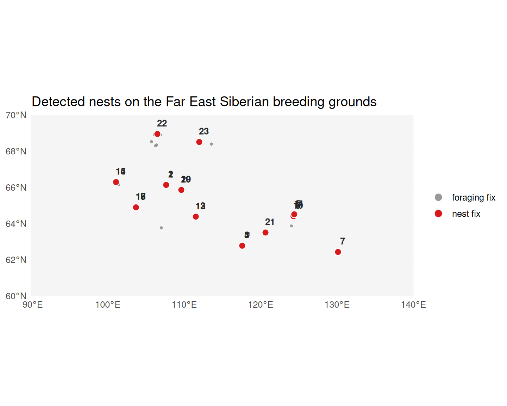

library(movepp)
library(sf)
#> Linking to GEOS 3.12.1, GDAL 3.8.4, PROJ 9.4.0; sf_use_s2() is TRUE
library(ggplot2)
data("godwit_demo")
godwit <- compute_step_speed(godwit_demo,
time_col = "time",
individual_col = "individual",
direction = "centered")
seg <- balm_segmentation(godwit,
variable_col = "step_speed",
individual_col = "individual",
verbose = FALSE)
stationary <- seg[!is.na(seg$cluster_type) & seg$cluster_type %in% c("LL", "LH"), ]
p <- detect_habitat_params(stationary, track = seg,
individual_col = "individual", time_col = "time")
#> eps = 0.656 km (migratory; 0.95-quantile of 2-comp GMM; flight/eps gap 306x)
#> minPts = 15 (~1.88 d min residence at 3.0 h sampling; knee)
hab <- dbscan_habitats(stationary,
individual_col = "individual",
eps = p$eps, minPts = p$minPts)
mpi <- compute_mpi(hab, individual_col = "individual",
time_col = "time", verbose = FALSE)
phs <- classify_phases(mpi, n_phases = 3, individual_col = "individual")
#> [classify_phases] 3 phase(s); peaks {0.035, 0.635, 0.964}; cut(s) {0.220, 0.846}; sizes {19963, 18973, 8016}; mean MPI {0.042, 0.615, 0.960}
# Map ascending-MPI phase labels to biological names
ph_df <- sf::st_drop_geometry(phs)
ph_order <- names(sort(tapply(ph_df$mpi, ph_df$phase, mean, na.rm = TRUE)))
phase_map <- setNames(c("wintering", "stopover", "breeding"), ph_order)
phs$phase_named <- factor(phase_map[as.character(phs$phase)],
levels = c("wintering", "stopover", "breeding"))
breeding <- phs[!is.na(phs$phase_named) & phs$phase_named == "breeding", ]
cat("Breeding-phase fixes:", nrow(breeding), "\n")
#> Breeding-phase fixes: 8018
cat("Date range:", format(range(breeding$time)), "\n")
#> Date range: 2023-05-18 13:00:00 2025-08-02 22:00:00Overview
detect_nests() implements the three-tier sigma-stratified ST-DBSCAN algorithm of the accompanying manuscript (Eq. 10). It exploits the fact that GPS fixes during nesting are approximately bivariate-normally distributed around the true nest location:
- ~95% of fixes within 2σ of the centre
- ~68% within 1σ
- ~38% within 0.5σ
A point is classified as a nest fix only if it survives the density threshold at all three sigma tiers simultaneously, yielding markedly fewer false positives than single-tier DBSCAN.
Recover the breeding subset from the upstream pipeline
Rather than hard-coding latitude or month thresholds, we reuse the phase classification from vignettes 01-04: the breeding-phase habitats are the ones with the highest mean MPI score in the phase classification voting output.
Project to a metric CRS
detect_nests() requires coordinates in metres so that search_dist has a physical interpretation. UTM 52N covers the Vilyuy / Lena breeding range:
breeding_utm <- sf::st_transform(breeding, 32652)Run detect_nests
With a 3-hour sampling interval, ~30 fixes cover roughly 4 days of continuous nest attendance — a reasonable lower bound. search_dist is relaxed to 50 m to absorb GPS positional noise on individual fixes.
res <- detect_nests(breeding_utm,
time_col = "time",
individual_col = "individual",
min_pts = 30L,
search_dist = 50,
time_window = "3 weeks",
verbose = FALSE)
res$nests
#> Simple feature collection with 23 features and 8 fields
#> Geometry type: POINT
#> Dimension: XY
#> Bounding box: xmin: -718700.4 ymin: 6922243 xmax: 558229.4 ymax: 7813445
#> Projected CRS: WGS 84 / UTM zone 52N
#> First 10 features:
#> nest_id individual n_points start_time
#> 1 1 Black-tailed Godwit 23_02 82 2024-05-23 22:00:00
#> 2 2 Black-tailed Godwit 23_02 64 2023-05-30 22:00:00
#> 3 3 Black-tailed Godwit 23_03 52 2024-05-20 01:00:00
#> 4 4 Black-tailed Godwit 23_03 116 2023-05-18 13:00:00
#> 5 5 Black-tailed Godwit 23_05 12 2025-06-15 16:00:00
#> 6 6 Black-tailed Godwit 23_05 16 2025-05-26 04:00:00
#> 7 7 Black-tailed Godwit 23_05 23 2024-06-24 20:00:00
#> 8 8 Black-tailed Godwit 23_05 98 2024-05-20 00:00:00
#> 9 9 Black-tailed Godwit 23_05 29 2024-05-31 06:00:00
#> 10 10 Black-tailed Godwit 23_05 13 2023-06-08 10:00:00
#> end_time mean_time lon lat
#> 1 2024-06-23 07:00:00 2024-06-10 18:29:18 -449711.35 7498963
#> 2 2023-06-25 22:00:00 2023-06-13 12:37:30 -449712.21 7498964
#> 3 2024-06-14 19:00:00 2024-05-30 15:28:55 -80419.48 7011837
#> 4 2023-06-25 07:00:00 2023-06-06 12:11:55 -80375.95 7011793
#> 5 2025-06-28 16:00:00 2025-06-21 11:45:05 277498.60 7160652
#> 6 2025-06-17 07:00:00 2025-06-05 09:03:45 273474.82 7150405
#> 7 2024-06-29 14:00:00 2024-06-26 22:57:23 558229.36 6922243
#> 8 2024-06-23 04:00:00 2024-06-07 23:34:18 273464.01 7150390
#> 9 2024-06-23 00:00:00 2024-06-14 10:20:41 273930.38 7150427
#> 10 2023-06-28 10:00:00 2023-06-18 04:55:23 273481.71 7150406
#> geometry
#> 1 POINT (-449711.3 7498963)
#> 2 POINT (-449712.2 7498964)
#> 3 POINT (-80419.48 7011837)
#> 4 POINT (-80375.95 7011793)
#> 5 POINT (277498.6 7160652)
#> 6 POINT (273474.8 7150405)
#> 7 POINT (558229.4 6922243)
#> 8 POINT (273464 7150390)
#> 9 POINT (273930.4 7150427)
#> 10 POINT (273481.7 7150406)Map: detected nests on the breeding grounds
We transform the nest centroids and the classified fixes back to WGS 84 and map them over the Far East Siberian breeding range (60–70 °N, 90–140 °E). Nest fixes (red) form tight cores within the looser cloud of foraging fixes (grey); each nest centroid is labelled with its nest_id.
world <- rnaturalearth::ne_countries(scale = "medium", returnclass = "sf")
pts_ll <- sf::st_transform(res$points, 4326)
pts_ll$is_nest <- !is.na(pts_ll$nest_id)
nests_ll <- sf::st_transform(res$nests, 4326)
nc <- sf::st_coordinates(nests_ll)
nests_ll$lon <- nc[, 1]; nests_ll$lat <- nc[, 2]
ggplot() +
geom_sf(data = world, fill = "grey96", colour = "grey80", linewidth = 0.2) +
geom_sf(data = pts_ll, aes(colour = is_nest), size = 0.7, alpha = 0.6) +
geom_sf(data = nests_ll, shape = 21, fill = "#D7191C",
colour = "white", size = 3, stroke = 0.6) +
geom_text(data = nests_ll, aes(lon, lat, label = nest_id),
nudge_y = 0.6, nudge_x = 0.6, size = 3.4,
fontface = "bold", colour = "grey15") +
scale_colour_manual(values = c(`TRUE` = "#D7191C", `FALSE` = "grey60"),
labels = c(`TRUE` = "nest fix", `FALSE` = "foraging fix"),
name = NULL) +
coord_sf(xlim = c(90, 140), ylim = c(60, 70), expand = FALSE) +
guides(colour = guide_legend(override.aes = list(size = 3, alpha = 1))) +
labs(title = "Detected nests on the Far East Siberian breeding grounds",
x = NULL, y = NULL) +
theme_minimal(base_size = 12)
Why three tiers?
Default sigma_ratios = c(1.0, 0.68, 0.38) (paired with internal distance multipliers c(1.0, 0.5, 0.25)) follow the bivariate-normal geometry of GPS fixes around a true nest. The stratified test — density requirements satisfied at ALL three radii — sharply discriminates true nest fixes from loose foraging clusters that might satisfy a single-tier test but lack the tight inner core.
Synthetic-data illustration
For a clean algorithm demonstration with known ground truth, simulate a nest cluster surrounded by foraging fixes:
set.seed(42)
n_nest <- 200
n_off <- 100
pts_syn <- sf::st_as_sf(data.frame(
lon = c(rnorm(n_nest, 0, 3), rnorm(n_off, 0, 150)),
lat = c(rnorm(n_nest, 0, 3), rnorm(n_off, 0, 150)),
time = seq.POSIXt(as.POSIXct("2023-05-15"),
by = "1 hour", length.out = 300),
individual = "synthetic_bird"
), coords = c("lon", "lat"), crs = 32633)
detect_nests(pts_syn, "time", "individual",
min_pts = 40L, search_dist = 30,
time_window = "3 weeks")$nestsWith hourly sampling and a tight 3-m cluster, the algorithm recovers the nest centre to sub-metre precision. On real 3-hour-interval data the parameters are relaxed (50 m, 30 points) to accommodate GPS noise and the coarser temporal grid.
Cross-validate with nestR
remotes::install_github("picardis/nestR")
library(nestR)
nestR_result <- find_nests(gps_data = your_data, buffer = 10)A side-by-side accuracy comparison on labelled data is provided in the paper-analyses/ companion repository.
See also
-
vignette("v04-mpi-phases")— produces the phase labels (upstream) -
vignette("v06-isfi")— uses thenestsoutput to compute INFI
sessionInfo()
#> R version 4.6.0 (2026-04-24)
#> Platform: x86_64-pc-linux-gnu
#> Running under: Ubuntu 24.04.4 LTS
#>
#> Matrix products: default
#> BLAS: /usr/lib/x86_64-linux-gnu/openblas-pthread/libblas.so.3
#> LAPACK: /usr/lib/x86_64-linux-gnu/openblas-pthread/libopenblasp-r0.3.26.so; LAPACK version 3.12.0
#>
#> locale:
#> [1] LC_CTYPE=C.UTF-8 LC_NUMERIC=C LC_TIME=C.UTF-8
#> [4] LC_COLLATE=C.UTF-8 LC_MONETARY=C.UTF-8 LC_MESSAGES=C.UTF-8
#> [7] LC_PAPER=C.UTF-8 LC_NAME=C LC_ADDRESS=C
#> [10] LC_TELEPHONE=C LC_MEASUREMENT=C.UTF-8 LC_IDENTIFICATION=C
#>
#> time zone: UTC
#> tzcode source: system (glibc)
#>
#> attached base packages:
#> [1] stats graphics grDevices utils datasets methods base
#>
#> other attached packages:
#> [1] ggplot2_4.0.3 sf_1.1-1 movepp_0.1.4
#>
#> loaded via a namespace (and not attached):
#> [1] gtable_0.3.6 jsonlite_2.0.0 dplyr_1.2.1
#> [4] compiler_4.6.0 tidyselect_1.2.1 Rcpp_1.1.1-1.1
#> [7] scales_1.4.0 yaml_2.3.12 fastmap_1.2.0
#> [10] dbscan_1.2.5 R6_2.6.1 generics_0.1.4
#> [13] classInt_0.4-11 s2_1.1.11 knitr_1.51
#> [16] tibble_3.3.1 units_1.0-1 DBI_1.3.0
#> [19] pillar_1.11.1 RColorBrewer_1.1-3 rlang_1.2.0
#> [22] xfun_0.58 S7_0.2.2 rnaturalearth_1.2.0
#> [25] otel_0.2.0 cli_3.6.6 withr_3.0.2
#> [28] magrittr_2.0.5 wk_0.9.5 class_7.3-23
#> [31] digest_0.6.39 grid_4.6.0 mclust_6.1.2
#> [34] lifecycle_1.0.5 vctrs_0.7.3 KernSmooth_2.23-26
#> [37] proxy_0.4-29 evaluate_1.0.5 glue_1.8.1
#> [40] farver_2.1.2 rnaturalearthdata_1.0.0 e1071_1.7-17
#> [43] rmarkdown_2.31 tools_4.6.0 pkgconfig_2.0.3
#> [46] htmltools_0.5.9